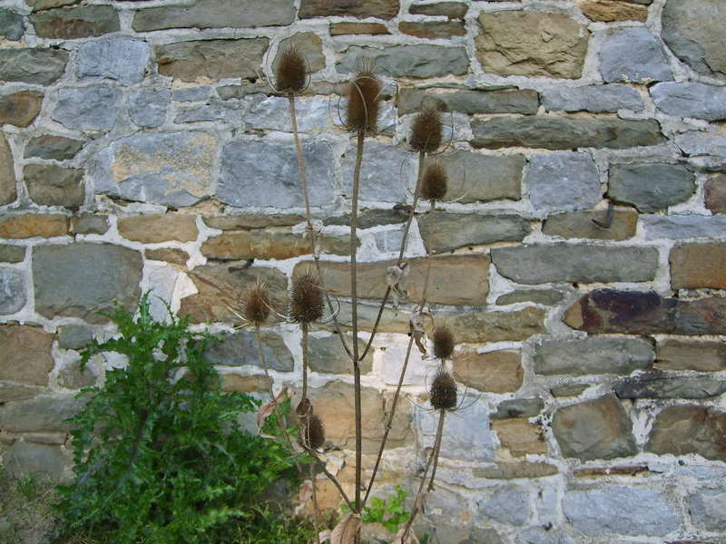

Effet sonore de la page :

La cardère sauvage ou dipsacus sylvestris est encore appelée couramment cabaret des oiseaux ou lavoir de Vénus, elle pousse dans les endroits incultes ainsi qu'au bord des chemins ; c'est une plante bisannuelle appartenant à la famille des dispsacacées.Ses grandes tiges qui peuvent atteindre 2 m sont cannelées et hérissées d'aiguillons.Les feuilles les plus basses sont disposées en rosette et fanées avant la floraison.
Les feuilles supérieures sont opposées et soudées à leur base formant ainsi une sorte de coupe où s'accumule l'eau de rosée ou l'eau de pluie. Les oiseaux ont l'habitude de venir boire à ces petits abreuvoirs d'où le nom populaire cabaret des oiseaux.
L'eau retenue par ces feuilles avait la réputation de soigner la peau, aussi la recueillait-on le matin dans ce "lavoir de Vénus".
Toutes les feuilles sont munies d'épines sur les bords et sur leur nervure centrale.
Les fleurs, comme celles des composées, sont réunies en une sorte de capitule de 5 à 10 cm de haut, constitué d'un réceptacle conique muni de paillettes épineuses entre lesquelles se trouvent les fleurs pourpre-violacé. Cette inflorescence est munie à sa base de grandes bractées épineuses bien plus grandes qu'elle. Une fois la floraison passée le réceptacle épineux et les bractées restent intacts et sèchent, ils peuvent alors entrer dans la composition des bouquets secs.
La racine de cardère possède des propriétés médicinales apéritives et stomachiques mais elle n'est plus très utilisée de nos jours. On a longtemps cultivé la cardère à foulon pour carder la laine car les paillettes épineuses de ses capitules sont crochues. Les "têtes " épineuses de cette cardère étaient appelées des cardes et servaient à démêler les fibres.
Retour à la liste des plantes sauvages
Retour au sommaire Passion d'oiseaux